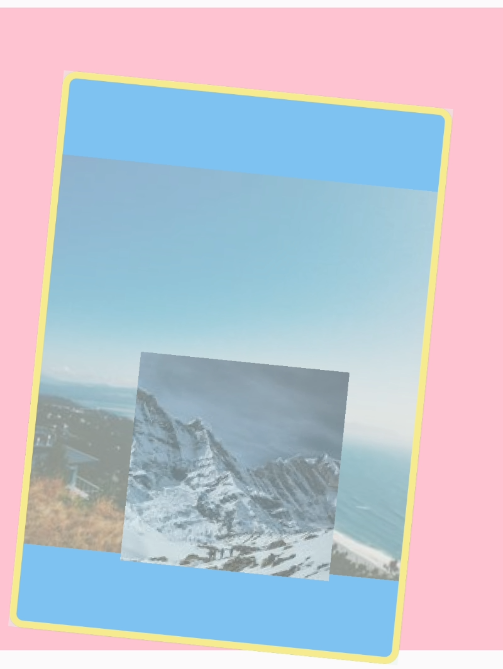
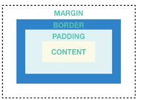

[Flutter] Layout Widget - Container
Flutter 有幾個基本的 Layout Widget ，例如 Container、GridView、ListView、Stack，Material Wdigets 也有 Card 和 ListTile 這幾種，這一篇先探索 Container，Container 算是最常使用的 layout widget，因為像是 padding、margins、borders 等效果都是由這一個 widget 來設定的
Container
Container 的設定項目有
-
child: 指定一個 widget
-
alignment:
- Aligment 設定，九宮格 ，topLeft、topCenter、topRight、centerLeft、center、centerRight、bottomLeft、bottomCenter 及 bottomRight
-
constraints: 屬性限制
1
2
3
4
5
6Container(
constraints: BoxConstraints.expand(
height: Theme.of(context).textTheme.display1.fontSize * 1.1 + 200.0,
),
...
} -
width: 寬度
-
height: 高度
-
decoration: 使用 BoxDecoration 來做設定背景
- BoxDecooration 可設定以下屬性
- color: 設定顏色
- image: DecorationImage class
- border: Border class
- BoxDecooration 可設定以下屬性
-
foregroundDecoration: 前景顏色，填滿 padding 內的區塊
-
margin & padding
- 可使用
EdgeInsetsclass 設定
- 可使用
-
transform: 可使用
Matrix4來做轉換效果
1 | Container( |
顯示效果

Margin Padding Border 關係圖
